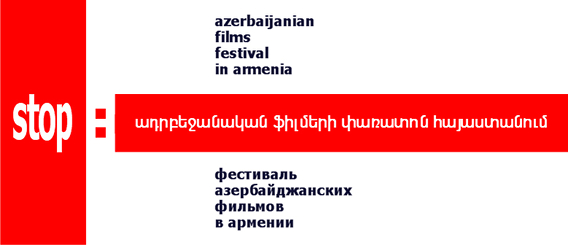

The Azerbaijanian
films festival “Stop” in Armenia
is an island of secure
environment for direct
communication surrounded
by the conditions of distorted
human values, and propaganda
that poisons healthy civilized relations.
The Festival is an exclusive
opportunity to get acquainted
with the best examples
of contemporary Azerbaijani
cinematography.
films festival “Stop” in Armenia
is an island of secure
environment for direct
communication surrounded
by the conditions of distorted
human values, and propaganda
that poisons healthy civilized relations.
The Festival is an exclusive
opportunity to get acquainted
with the best examples
of contemporary Azerbaijani
cinematography.
STOP FESTIVAL INVITES
April 17, at 4 p.m.
Helsinki Citizens’ Assembly Vanadzor Office
Vanadzor, Tigran Mets 59
A series of 4 short films
will be presented:
one documentary
and three feature films
produced in Azerbaijan
in 2007-2008.
There is only one
the Audience sympathy award
determined through viewers votes.
Films are dubbed in Armenian.
ENTRANCE IS FREE
with support from the British and US Embassies in Armenia.
STATEMENT
BY THE CAUCASUS CENTER OF PEACE MAKING INITIATIVES
IN CONNECTION WITH THE PROPAGANDA OF TERROR IN GYUMRI
Yet another defamation campaign has been undertaken against the holding of the “STOP” Azerbaijani films festival. A false information campaign about the purposes of the festival and those films included in the schedule has been spread through the media as well as during a demonstration held in Gyumri on April 11.
In violation of the law, both government and public representatives voiced direct threats not to allow the festival to be held, constituting instigation to violence against the festival organizers and the Asparez Club of Journalists, the organization providing the venue for holding the festival, as well as citizens who would attend.
After examining the video materials and footage by the Armenian media which covered the meeting protesting against the Azerbaijani film festival, and considering eye witness accounts, we state that Vardan Gukasyan, the mayor of Gyumri, under whose auspices propaganda of terror is implemented, is personally responsible for the artificially created tension around the festival as well as possible provocations and violence against the organizers and participants of the festival scheduled
for April 12.
11.04.2012
After examining the video materials and footage by the Armenian media which covered the meeting protesting against the Azerbaijani film festival, and considering eye witness accounts, we state that Vardan Gukasyan, the mayor of Gyumri, under whose auspices propaganda of terror is implemented, is personally responsible for the artificially created tension around the festival as well as possible provocations and violence against the organizers and participants of the festival scheduled
for April 12.
11.04.2012
STATEMENT
BY THE CAUCASUS CENTER OF PEACE MAKING INITIATIVES
IN CONNECTION WITH THE EVENTS OF 12 APRIL 2012
The screening of Azerbaijani films included in the schedule of the “STOP” festival did not take place in the “Asparez” Club of Journalists. An hour before the start of festival, incitement to terror masked by an orchestrated demonstration of public disturbance reached its climax when representatives from the government and law-enforcement bodies stated that the security of the members of “Asparez” and CCPMI who were in the building where the festival was due to be shown cannot be guaranteed. A number of provocative actions were undertaken which were directly encouraged by the speeches of representatives from the government and law-enforcement bodies. The latter had been trying for a few hours to apply psychological pressure on the organizers of the festival with the aim to make them leave the venue. It should be especially noted that the attack on the director of the festival, Georgi Vanyan, occurred immediately after a heated speech from the head of the department of culture in the Gyumri municipality, the purpose of which was at any expense to prevent the festival from being held.
Electricity supplying the whole area surrounding the venue was cut off and it was announced that it would not be restored as long as the organizers of the festival were present. The statement by the director of the festival and announced in the media that admission was free and that by 3 pm there was the possibility of participants arriving, representatives of the government responded that they were 100 percent sure that no Gyumri resident would come “in the current situation”.
As the time of the screening came nearer, “psychological pressure” by representatives from the government and law-enforcement bodies in the building transformed itself into threats as if public turmoil would break out soon after and that bloodshed would occur. Later, the organizers of the festival were informed that there were checks installed on the highway from Yerevan to Gyumri and that the bus bringing participants of the festival from the capital would be stopped by hoodlums. In that case bloodshed was predicted to happen and it was said that no one would provide or be responsible for the security of the people on the bus. We consider it necessary to note that the representatives from the public who had a free access to the building due to their status of “negotiators” resorted to provocative actions close to the planned start of screening and only the composure of the organizers of the festival prevented assault and battery and brawls.
Taking into consideration the security of the members of “Asparez”, CCPMI, and the participants in the current situation, the director of the festival informed the media of the cancellation of the screening in the Journalist’s Club.
Organizers of the festival left the building and joined the participants from Yerevan on the road to Gyumri. Their bus stopped by a restaurant on the road where the Azerbaijani films festival “STOP” took place and 26 people watched the program of the festival with 24 taking part in the voting to determine the recipient of the Audience Symathy award.
The next screening will be held at 16:00 on 17 April in the Vanadzor office of the Helsinki Assembly.
12.04.2012
Electricity supplying the whole area surrounding the venue was cut off and it was announced that it would not be restored as long as the organizers of the festival were present. The statement by the director of the festival and announced in the media that admission was free and that by 3 pm there was the possibility of participants arriving, representatives of the government responded that they were 100 percent sure that no Gyumri resident would come “in the current situation”.
As the time of the screening came nearer, “psychological pressure” by representatives from the government and law-enforcement bodies in the building transformed itself into threats as if public turmoil would break out soon after and that bloodshed would occur. Later, the organizers of the festival were informed that there were checks installed on the highway from Yerevan to Gyumri and that the bus bringing participants of the festival from the capital would be stopped by hoodlums. In that case bloodshed was predicted to happen and it was said that no one would provide or be responsible for the security of the people on the bus. We consider it necessary to note that the representatives from the public who had a free access to the building due to their status of “negotiators” resorted to provocative actions close to the planned start of screening and only the composure of the organizers of the festival prevented assault and battery and brawls.
Taking into consideration the security of the members of “Asparez”, CCPMI, and the participants in the current situation, the director of the festival informed the media of the cancellation of the screening in the Journalist’s Club.
Organizers of the festival left the building and joined the participants from Yerevan on the road to Gyumri. Their bus stopped by a restaurant on the road where the Azerbaijani films festival “STOP” took place and 26 people watched the program of the festival with 24 taking part in the voting to determine the recipient of the Audience Symathy award.
The next screening will be held at 16:00 on 17 April in the Vanadzor office of the Helsinki Assembly.
12.04.2012
THE CAUCASUS CENTRE OF PEACE-MAKING INITIATIVES
TAKES THE FUNCTION OF MAINTENANCE OF CONSTITUTIONAL ORDER IN THE REPUBLIC OF ARMENIA UPON ITSELF
The public events of the festival of Azerbaijan films “Stop” have been regularly obstructed since 2009.
Every owner of the premises suitable for film-showing has undergone pressure and abuse of power from various levels
of authority. The cowed owners have disavowed legal contracts against their will and their own charters and regulations.
The president of the Journalist Club Asparez was the first
not to yield to the pressure and create a precedent unexpected by authorities. As a result, the pressure and the treats became public.
The campaign of bullying, railing, misinformation and calumny around the festival gained strength sharply, using mass media
as well as some provocateurs rubbing shoulders with common people.
Massive demonstrations of ‘popular anger’ were organized, under cover of which the authorities of the town of Gyumri and the province of Shirak carried out an act of terrorism, involving some members of municipal and provincial police.
We have every reason to state that a similar scenario would be used to arrange a burst of ‘popular anger’ in the town of Vanadzor, and the festival organizers, the staff of the Vanadzor office of the Helsinki Citizens’ Association and the audience would be deprived of any guaranties of security. Commenting upon the impending ‘mass indignation’, some parliamentary and extraparliamentary political forces, public organizations and media have already sent a warning that the situation is pregnant with consequences and ‘none but the festival organizers and their supporters shall be wholly responsible for them’.
We have every reason to state that law-enforcing bodies
of the Republic of Armenia are not investigating the facts of law infringement that took place in the Asparez Club and the adjacent territory on 12 April 2012, that they are not taking nor going to take any measures to secure the rights to personal security, the freedom of movement and the freedom of assembly to citizens
of the Republic of Armenia during the cinema festival in the town of Vanadzor.
Armenian law-enforcing bodies are lying idle.
We have every reason to state that human rights organizations working in Armenia have given no legal assessment of the facts of law infringement that took place in the Asparez Club and the adjacent territory on 12 April 2012, that they are not going to take any measures to secure the rights to personal security, the freedom of movement and the freedom of assembly to citizens
of the Republic of Armenia during the cinema festival in the town of Vanadzor.
Human rights organizations are lying idle in Armenia.
Under the circumstances, the Caucasus Centre of Peace-Making Initiatives takes the function of maintenance of constitutional order in the Republic of Armenia upon itself.
The Caucasus Centre for Peace-making Initiatives notifies the audience that the festival of Azerbaijan films Stop is postponed in order to prevent the national mobilization and national exercise that are in preparation under pseudo-patriotic slogans, fixed on
16 and 17 April.
We are sure that by this step we spare a certain part of Vanadzor’s population from the humiliation of being brought by means of administrative blackmail. That is, today and tomorrow:
- senior pupils and undergraduates will attend their classes;
- officials will remain in their offices, fulfilling their official duties paid by tax-payers;
- political parties’ election head-quarters will be involved in their election struggle;
- public organization will engage in their current humanistic and enlightening projects.
We are sure that by this step we exempt a certain number of the people, who have had a loss in the war, from their obligation
to commit a crime on 17 April 2012.
The “Stop”festival of Azerbaijan films in Armenia is not a once-only event. It is a Marathon race, a social process of liberation from the propaganda which gathers force at the expense of humanistic ideas and common sense, a process
of emancipation from the propaganda ascendancy.
16.04.2012, 04:30
Every owner of the premises suitable for film-showing has undergone pressure and abuse of power from various levels
of authority. The cowed owners have disavowed legal contracts against their will and their own charters and regulations.
The president of the Journalist Club Asparez was the first
not to yield to the pressure and create a precedent unexpected by authorities. As a result, the pressure and the treats became public.
The campaign of bullying, railing, misinformation and calumny around the festival gained strength sharply, using mass media
as well as some provocateurs rubbing shoulders with common people.
Massive demonstrations of ‘popular anger’ were organized, under cover of which the authorities of the town of Gyumri and the province of Shirak carried out an act of terrorism, involving some members of municipal and provincial police.
We have every reason to state that a similar scenario would be used to arrange a burst of ‘popular anger’ in the town of Vanadzor, and the festival organizers, the staff of the Vanadzor office of the Helsinki Citizens’ Association and the audience would be deprived of any guaranties of security. Commenting upon the impending ‘mass indignation’, some parliamentary and extraparliamentary political forces, public organizations and media have already sent a warning that the situation is pregnant with consequences and ‘none but the festival organizers and their supporters shall be wholly responsible for them’.
We have every reason to state that law-enforcing bodies
of the Republic of Armenia are not investigating the facts of law infringement that took place in the Asparez Club and the adjacent territory on 12 April 2012, that they are not taking nor going to take any measures to secure the rights to personal security, the freedom of movement and the freedom of assembly to citizens
of the Republic of Armenia during the cinema festival in the town of Vanadzor.
Armenian law-enforcing bodies are lying idle.
We have every reason to state that human rights organizations working in Armenia have given no legal assessment of the facts of law infringement that took place in the Asparez Club and the adjacent territory on 12 April 2012, that they are not going to take any measures to secure the rights to personal security, the freedom of movement and the freedom of assembly to citizens
of the Republic of Armenia during the cinema festival in the town of Vanadzor.
Human rights organizations are lying idle in Armenia.
Under the circumstances, the Caucasus Centre of Peace-Making Initiatives takes the function of maintenance of constitutional order in the Republic of Armenia upon itself.
The Caucasus Centre for Peace-making Initiatives notifies the audience that the festival of Azerbaijan films Stop is postponed in order to prevent the national mobilization and national exercise that are in preparation under pseudo-patriotic slogans, fixed on
16 and 17 April.
We are sure that by this step we spare a certain part of Vanadzor’s population from the humiliation of being brought by means of administrative blackmail. That is, today and tomorrow:
- senior pupils and undergraduates will attend their classes;
- officials will remain in their offices, fulfilling their official duties paid by tax-payers;
- political parties’ election head-quarters will be involved in their election struggle;
- public organization will engage in their current humanistic and enlightening projects.
We are sure that by this step we exempt a certain number of the people, who have had a loss in the war, from their obligation
to commit a crime on 17 April 2012.
The “Stop”festival of Azerbaijan films in Armenia is not a once-only event. It is a Marathon race, a social process of liberation from the propaganda which gathers force at the expense of humanistic ideas and common sense, a process
of emancipation from the propaganda ascendancy.
16.04.2012, 04:30